적막 · 외형 보완칼의 깊이, 기사의 윤곽
새 아이스와 아르토리아로 플레이
아이스
길게 파인 중앙 홈과 날밑의 짧은 두 홈, 빛이 갈라지는 연마면. 강철 가드와 황동 끝장식, 목결과 오목한 폼멜을 보강했습니다. 전체168cm·3.5kg는 유지합니다.
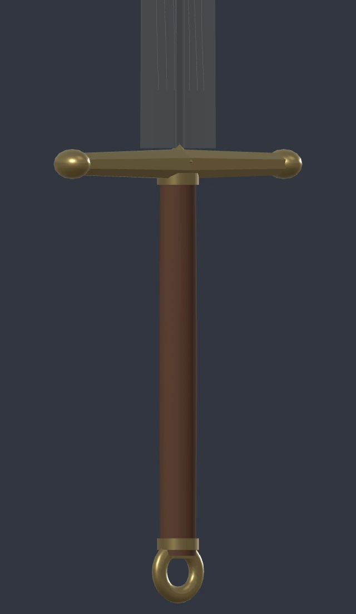
이전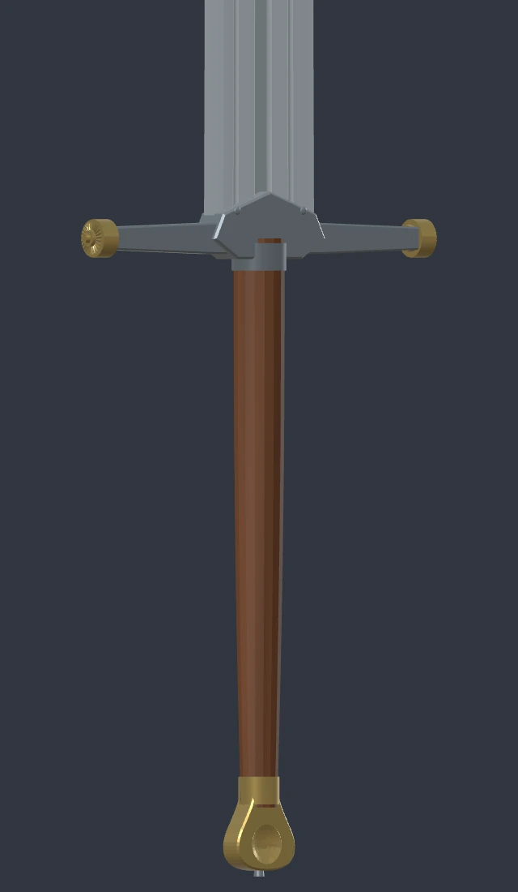
보완검 전체와 칼날 단면 보기
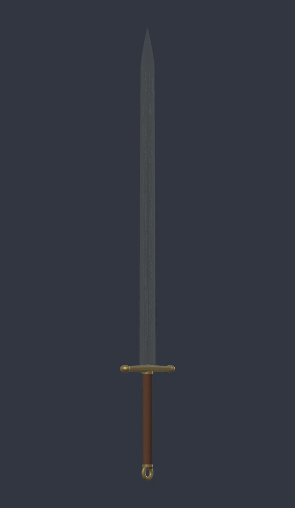
이전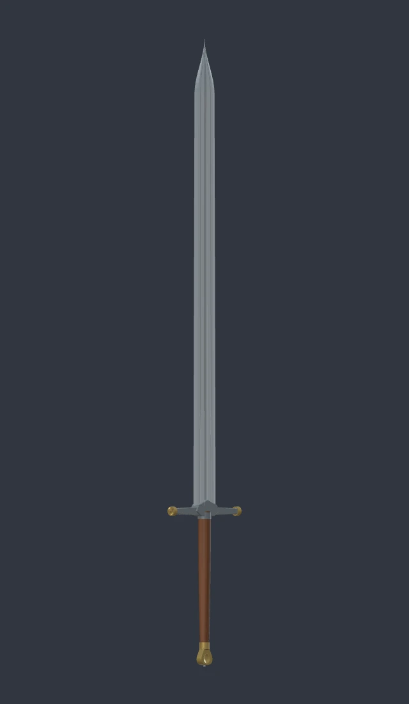
보완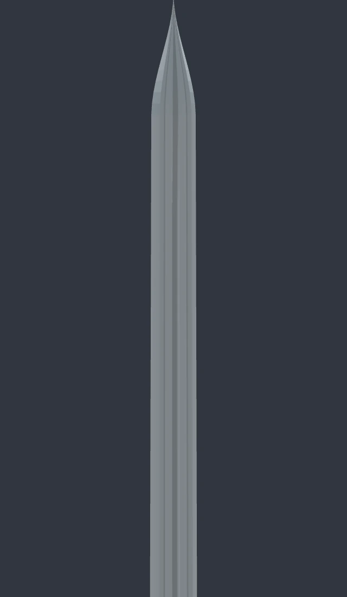
칼날의 홈과 경사면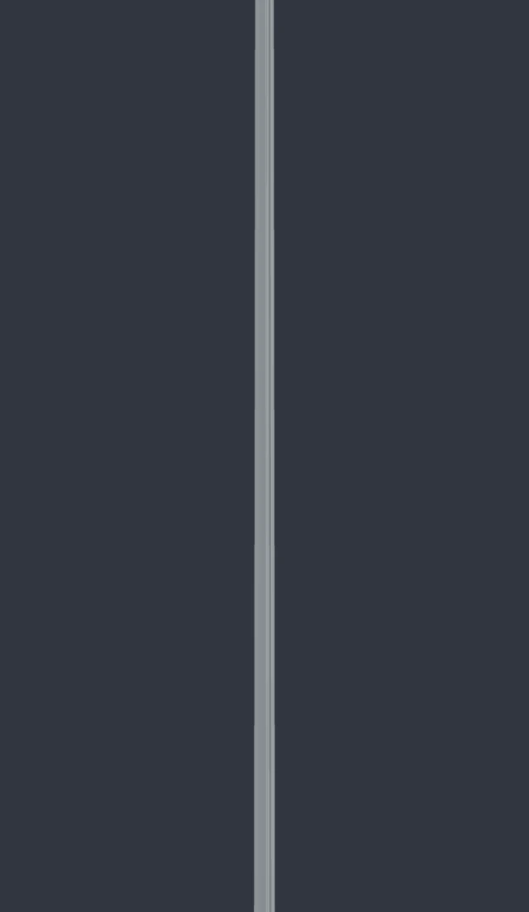
측면의 두께참고한 HBO 공식 라이선스 제품 사진 ↗
아르토리아
갑옷과 발끝의 각진 모양을 줄이고, 치맛자락이 길게 이어지도록 다듬었습니다. 손과 검이 잘 보이도록 대비를 살리고 청록 망토에 굵은 주름을 더했습니다.
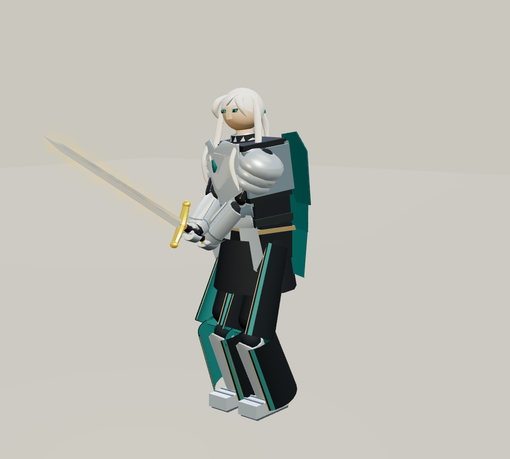
이전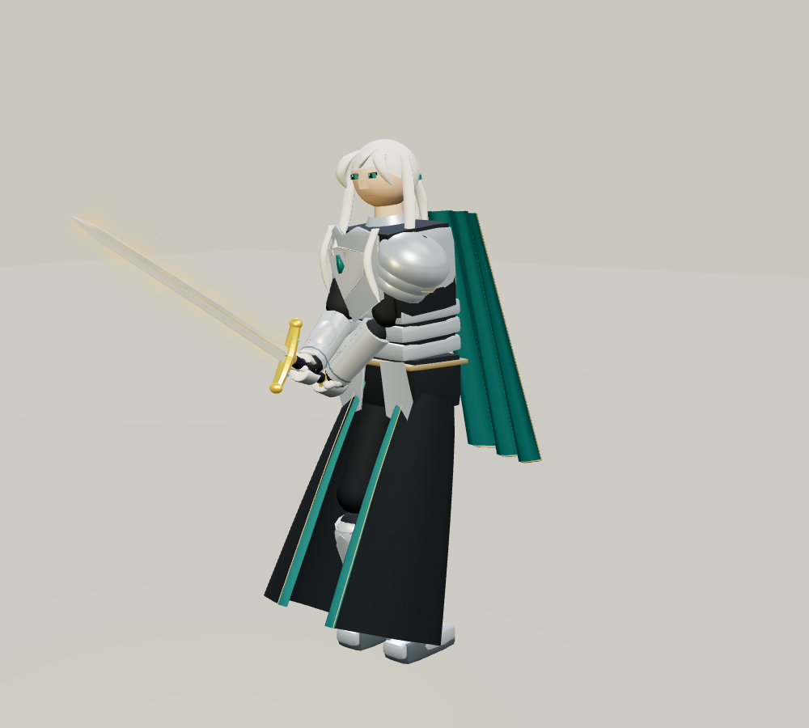
보완정면과 옆모습 비교
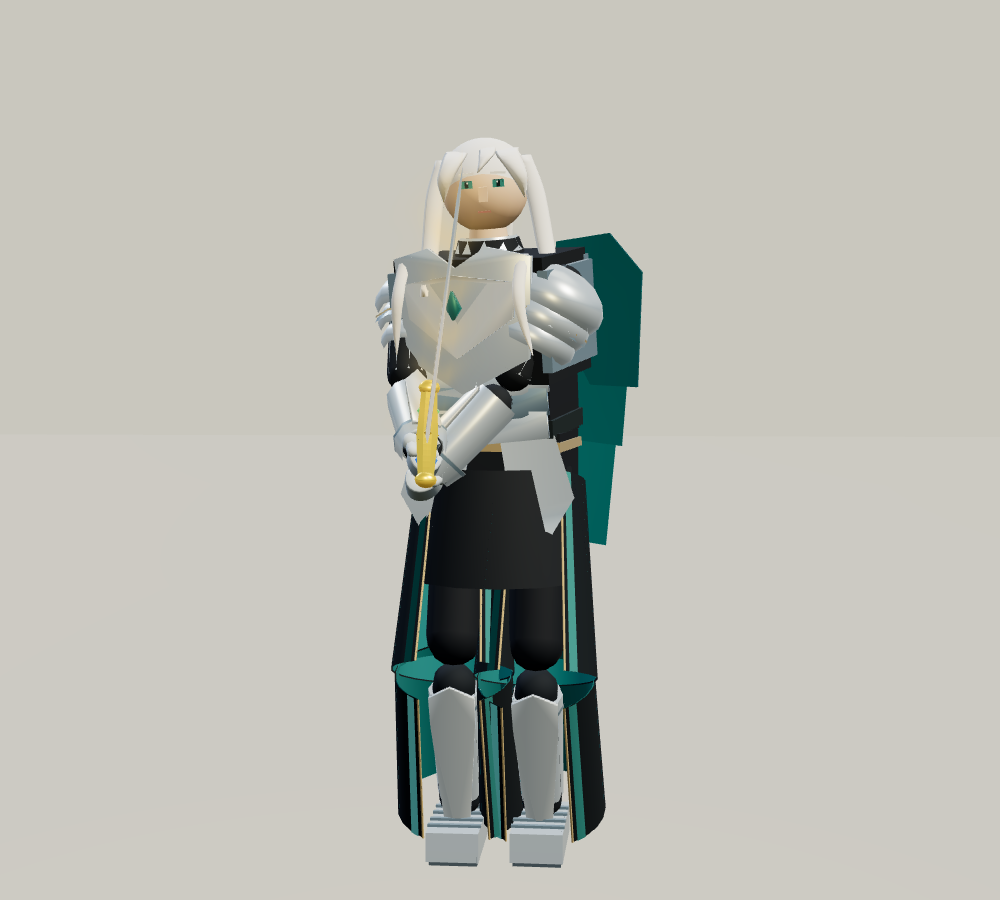
이전 정면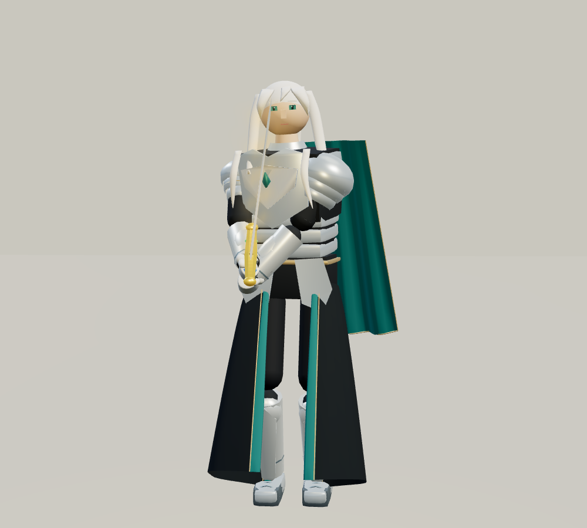
보완 정면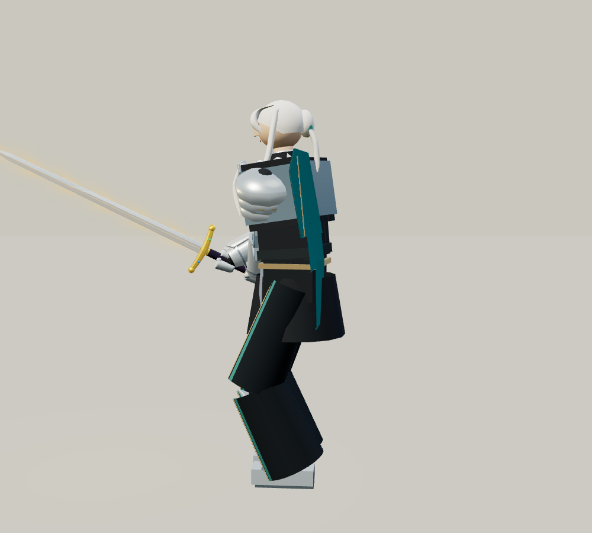
이전 옆모습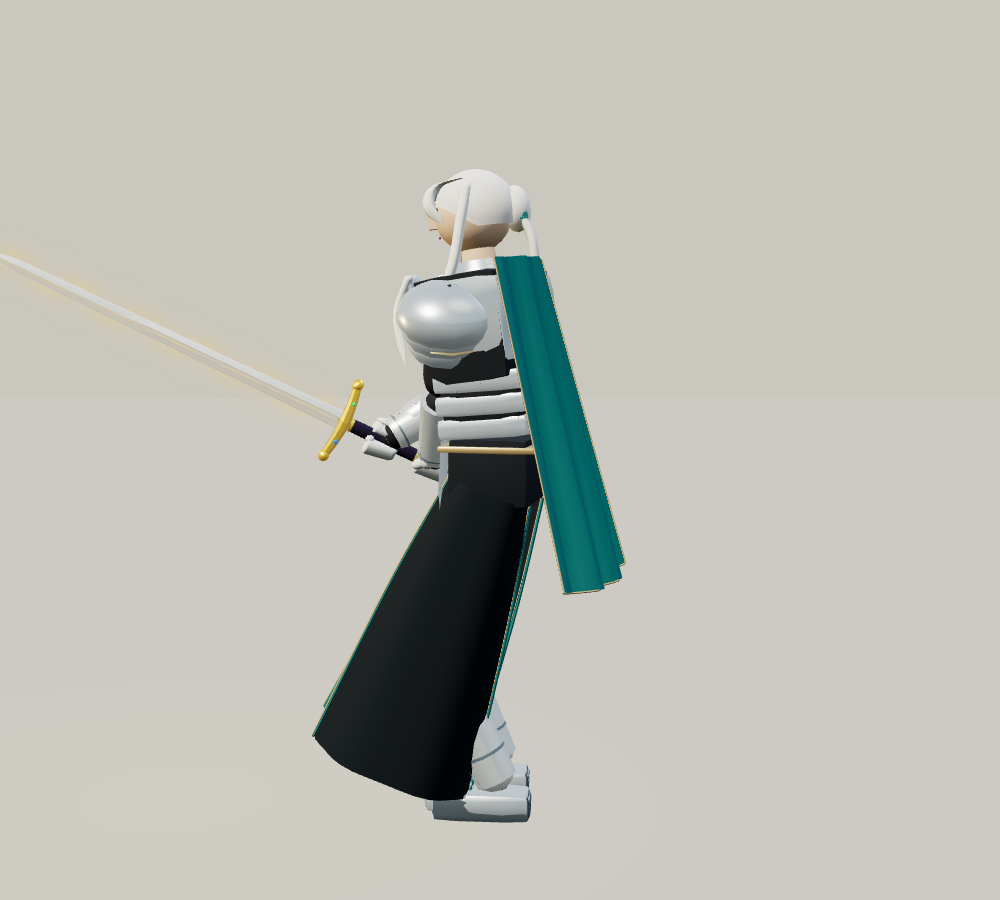
보완 옆모습